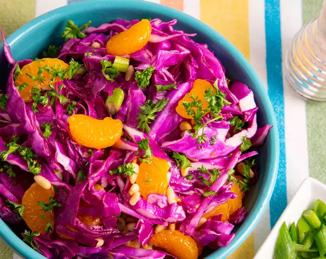

Purple Cabbage Salad

Description
Purple cabbage salad is a vibrant and refreshing dish featuring thinly sliced purple cabbage tossed with a tangy dressing,
offering a crisp texture and a burst of color to any meal.
Ingredients
- 2 ½ cups shredded red cabbage
- 1 (10 ounce) can mandarin oranges, drained
- 1 green onion, chopped
- ¼ cup sweetened dried cranberries
- ¼ cup pine nuts
- ⅓ cup canola oil
- ¼ cup vinegar
- 1 tablespoon white sugar
- 2 pinches salt
Steps
- Lightly toss red cabbage, mandarin orange segments, green onion, and cranberries together in a salad bowl.
- Toast pine nuts in a small skillet over medium heat, stirring constantly, until fragrant and lightly browned, about 2 minutes. Remove immediately to a bowl and let cool.
- Whisk canola oil, vinegar, sugar, and salt in a bowl until sugar and salt have dissolved.
- Stir toasted pine nuts into salad and pour dressing over the top. Toss again to coat salad with dressing.